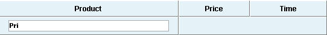

While filtering in plain grid is pretty obvious and has not space for variations, filtering in TreeGrid can be applied in many different ways.
Filtering by level
By default filtering in TreeGrid affects only last level of hierarchy (leaf items)
( the mode can be also enalbled by using grid.setFilrationLevel(-1) )
For example next dataset
Will be filtered as
the branches , there item not find, will be full hidden
values on not last levels ignored.
By using setFiltrationLevel method , it possible to change level of filtration
After such command filtering use data from different level of hierarchy and filtering will show next results

In second case you can see that items below find math preserved
It possible to force grid to filter data on all levels of hierarchy at the same time.
grid.setFiltrationLevel(-2);